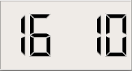

Digital Clock Example
The Digital Clock example shows how to use QLCDNumber to display a number with LCD-like digits.

Screenshot of the Digital Clock example
This example also demonstrates how QTimer can be used to update a widget at regular intervals.
DigitalClock Class Definition
The DigitalClock class provides a clock widget showing the time with hours and minutes separated by a blinking colon. We subclass QLCDNumber and implement a private slot called showTime() to update the clock display:
class DigitalClock : public QLCDNumber { Q_OBJECT public: DigitalClock(QWidget *parent = nullptr); private slots: void showTime(); };
DigitalClock Class Implementation
DigitalClock::DigitalClock(QWidget *parent) : QLCDNumber(parent) { setSegmentStyle(Filled); QTimer *timer = new QTimer(this); connect(timer, &QTimer::timeout, this, &DigitalClock::showTime); timer->start(1000); showTime(); setWindowTitle(tr("Digital Clock")); resize(150, 60); }
In the constructor, we first change the look of the LCD numbers. The QLCDNumber::Filled style produces raised segments filled with the foreground color (typically black). We also set up a one-second timer to keep track of the current time, and we connect its timeout() signal to the private showTime() slot so that the display is updated every second. Then, we call the showTime() slot; without this call, there would be a one-second delay at startup before the time is shown.
void DigitalClock::showTime() { QTime time = QTime::currentTime(); QString text = time.toString("hh:mm"); if ((time.second() % 2) == 0) text[2] = ' '; display(text); }
The showTime() slot is called whenever the clock display needs to be updated.
The current time is converted into a string with the format "hh:mm". When QTime::second() is a even number, the colon in the string is replaced with a space. This makes the colon appear and vanish every other second.
Finally, we call QLCDNumber::display() to update the widget.